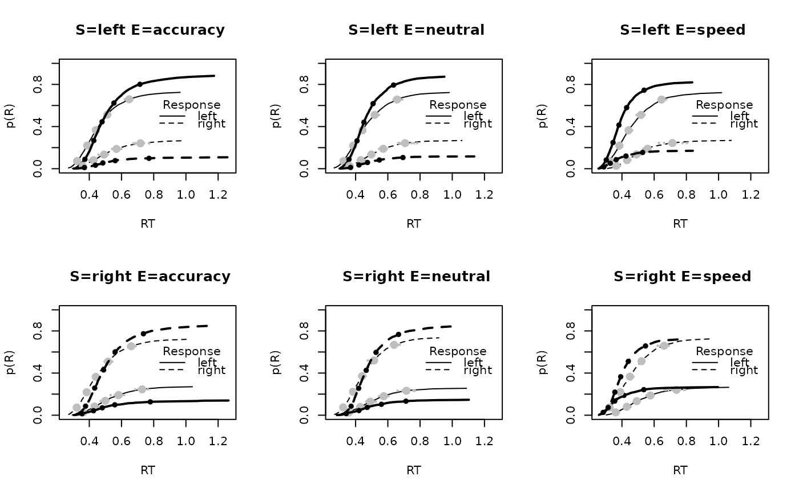

Plot (defective) cumulative density functions of the observed data and data from the posterior predictive distribution: the probability of a response, p(R) as a function of response time for the experimental data and posterior predictive simulations.
Usage
plot_fit(
data,
pp,
subject = NULL,
factors = NULL,
functions = NULL,
stat = NULL,
stat_name = "",
adjust = 1,
quants = c(0.025, 0.5, 0.975),
do_plot = TRUE,
xlim = NULL,
ylim = NULL,
layout = NULL,
mfcol = FALSE,
probs = c(1:99)/100,
data_lwd = 2,
fit_lwd = 1,
q_points = c(0.1, 0.3, 0.5, 0.7, 0.9),
qp_cex = 1,
pqp_cex = 0.5,
lpos = "right",
main = ""
)Arguments
- data
A data frame. The experimental data in EMC2 format with at least
subject(i.e., the subject factor),R(i.e., the response factor) andrt(i.e., response time) variable. Additional factor variables of the design are optional.- pp
A data frame. Posterior predictives created by
predict()- subject
Integer or string selecting a subject from the data. If specified only that subject is plotted.
NULL(i.e., the default), will plot all subjects.- factors
Character vector of factors in data to display separately. If NULL (default) use names of all columns in data except "trials","R", and "rt". Omitted factors are aggregated over. If NA treats entire data set as a single cell. Must be NA or NULL when using stat argument.
- functions
A named list of functions that create new factors which can then be used by the factors and stat arguments.
- stat
A function that takes the data/the posterior predictives and returns a single value. For the posterior predictives it will use a single value per replicate, which are then plotted as a density.
- stat_name
A string naming what the stat argument calculates, used in labeling the x-axis of the plot.
- adjust
Numeric. Density function bandwidth adjust parameter. See “?density`
- quants
A vector. Quantiles of the posterior predictives to return when stat argument is supplied.
- do_plot
Boolean. Set to
FALSEto only return the quantiles and omit the plots.- xlim
A numeric vector. x-axis plot limit.
- ylim
A numeric vector. y-axis plot limit.
- layout
A vector specifying the layout as in
par(mfrow = layout). IfNAorNULLuses current plot window layout.- mfcol
Boolean. If
TRUEuses par(mfrow = layout), otherwise uses par(mfcol = layout)- probs
Vector of probabilities at which to calculate cumulative density function
- data_lwd
Integer. Line width for data
- fit_lwd
Integer. Line width for posterior predictives
- q_points
Vector. Quantile points to plot
- qp_cex
Numeric. Cex for data quantile points
- pqp_cex
Numeric. Cex for predicted quantile points
- lpos
Character. Legend position, see
?legend().- main
Character. Pasted before the plot title, especially useful when specifying a stat argument.
Details
The data is plotted in black. Large grey points show the average quantiles across the posterior predictives. The small grey points represent the predicted quantile of an individual replicate, providing a representation of uncertainty in the model predictions.
If the stat argument is supplied (which calculates a statistic based on the data), the posterior predictives are plotted as a density over the different replicates. A vertical line is plotted at the value of that statistic for the experimental data.
If more than one subject is included, the data and fits are aggregated across subjects by default.
Also see ?plot_defective_density() for more details.
Examples
# \donttest{
# First generate posterior predictives based on an emc object run with run_emc
pp <- predict(samples_LNR, n_cores = 1, n_post = 10)
# Then visualize the model fit
plot_fit(forstmann, pp, factors = c("S", "E"), layout = c(2,3))

# Specific statistics on the posterior predictives can also be specified
# This function calculates the difference in rt between two S levels.
# It takes the data (or the posterior predictives) as an argument
drt <- function(data) diff(tapply(data$rt,data[,c("S")],mean))
plot_fit(forstmann, pp, stat=drt,stat_name="Rt difference",
main=("Left vs Right"))
# }